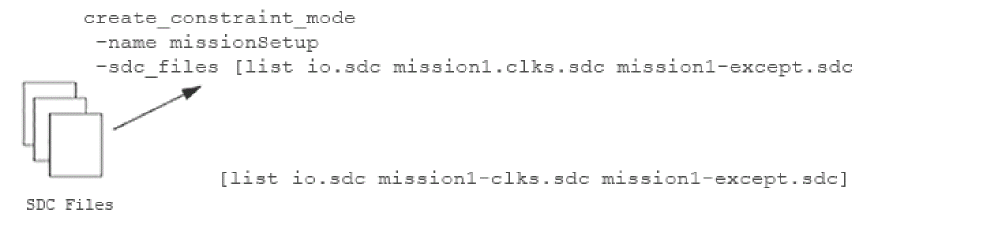

Constraint Mode Objects
- Creating Constraint Mode Objects
- Editing Constraint Mode Objects
- Entering Constraints Interactively
- Constraint Support in Multi-Mode and MMMC Analysis
Creating Constraint Mode Objects
A constraint mode object defines one of possibly many different functional, test, or Dynamic Voltage and Frequency Scaling (DVFS) modes of a design. It consists of a list of SDC constraint files that contain timing analysis information, such as the clock specifications, case analysis constraints, I/O timings, and path exceptions that make each mode unique. SDC files can be shared by many different constraint modes, and the same constraint mode can be associated with multiple analysis views.
To create a constraint mode object, use the following command:
The following figure shows that the constraint mode “missionSetup” reads in 3 constraint mode files “io.sdc”, “mission1-clks.sdc” and “mission1-except.sdc”:
Figure -4 Constraint Mode Objects

Editing Constraint Mode Objects
To change the SDC constraint file information for an existing constraint mode object, use the following command:
In the GUI mode, you can make changes to a constraint mode object using the Add Constraint Mode form.
Click the File tab and choose Configure MMMC. A new window opens, double-click on the Constraint Modes tab and add the “SDC Constraint File(s)”. Once done, click Apply and OK to save the settings.
ClickTiming & SI tab and choose MMMC Browser. A new window opens, double-click on the Constraint Modes tab and add the “SDC Constraint File(s)”. Once done, click Apply and OK to save the settings.
You can use the update_constraint_mode command or the Add Constraint Mode form before (or any time later) multi-mode multi-corner view definitions are loaded into the design. However, once the software is in multi-mode multi-corner analysis mode, any changes to an existing object results in the timing, delay calculation, and RC data are reset for all the analysis views.
Entering Constraints Interactively
The Tempus software allows you to update assertions for a multi-mode multi-corner constraint mode object, and have those changes take immediate effect, use the following command:
Specifying set_interactive_constraint_modes puts the software into interactive mode for the specified constraint mode objects. Any constraints that you specify after this command will take effect immediately on all active analysis views that are associated with these constraint modes. By default, no constraint modes are considered active.
For example, the following commands put the software into interactive constraint entry mode, and apply the set_propagated_clock assertion on all views in the current session that are associated with the constraint mode func1:
set_interactive_constraint_modes func1
set_propagated_clock [all_clocks]
The software stays in interactive mode until you exit it by specifying the set_interactive_constraint_modes command with an empty list:
set_interactive_constraint_modes { }
All the new constraints are saved in the SDC file for the specified constraint mode when you save the design.
The all_constraint_modes command can be used to generate a list of constraint modes as the argument for this command.
For example, the following commands put the software into interactive constraint entry mode, and apply the set_propagated_clock assertion on all active analysis views in the current session.
set_interactive_constraint_modes [all_constraint_modes -active]
set_propagated_clock [all_clocks]
You can use the get_interactive_constraint_modes command to return a list of the constraint mode objects in interactive constraint entry mode.
Return to top